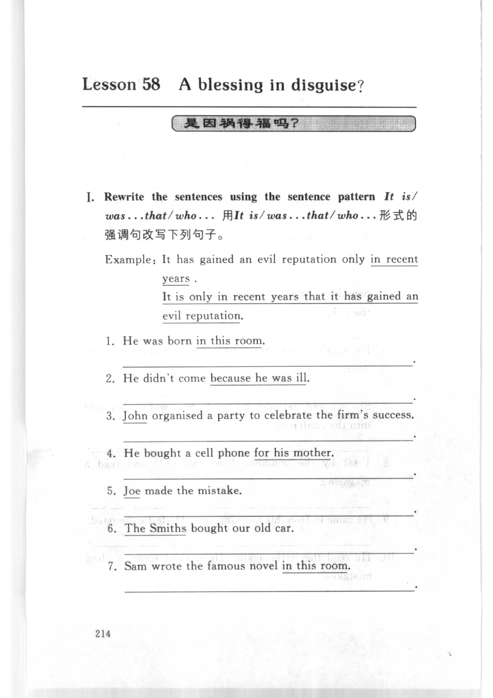
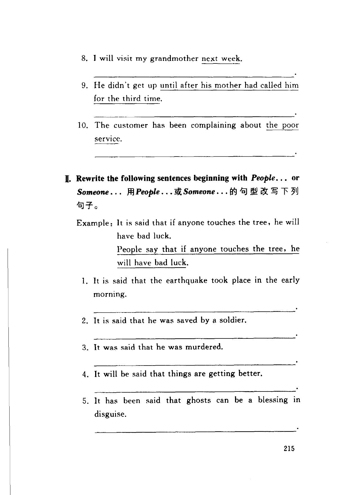
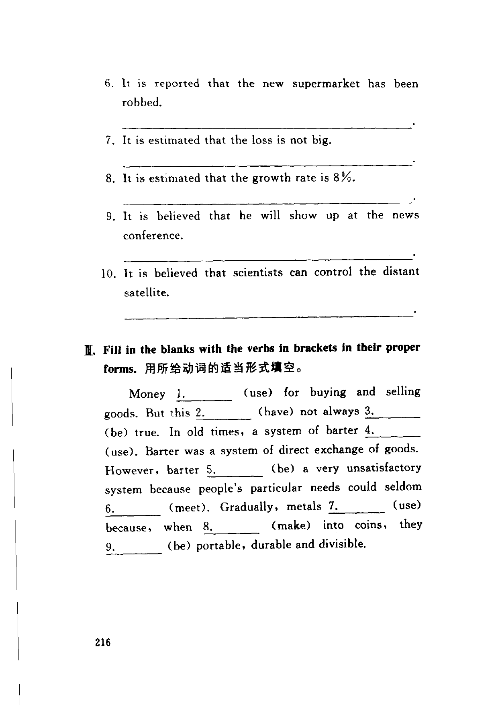

Grammar exercises · 语法练习
I. Rewrite the sentences using the sentence pattern It is/was…that/who….
用 It is/was…that/who… 形式的强调句改写下列句子。
Example: It has gained an evil reputation only in recent years.
It is only in recent years that it has gained an evil reputation.
-
I. It is/was…that/who… — He was born this room.
-
I. It is/was…that/who… — He didn't come because he was ill.
-
I. It is/was…that/who… — John organised a party to celebrate the firm's success.
-
I. It is/was…that/who… — He bought a cell phone for his mother.
-
I. It is/was…that/who… — Joe made the mistake.
-
I. It is/was…that/who… — The Smiths bought our old car.
-
I. It is/was…that/who… — Sam wrote the famous novel in this room.
-
I. It is/was…that/who… — I will visit my grandmother next week.
-
I. It is/was…that/who… — He didn't get up until after his mother had called him for the third time.
-
I. It is/was…that/who… — The customer has been complaining about the poor service.
II. Rewrite the following sentences beginning with People… or Someone…
用 People… 或 Someone… 的句型改写下列句子。
Example: It is said that if anyone touches the tree, he will have bad luck.
People say that if anyone touches the tree, he will have bad luck.
-
II. People… / Someone… — It is said that the earthquake took place in the early morning.
-
II. People… / Someone… — It is said that he was saved by a soldier.
-
II. People… / Someone… — It was said that he was murdered.
-
II. People… / Someone… — It will be said that things are getting better.
-
II. People… / Someone… — It has been said that ghosts can be a blessing in disguise.
-
II. People… / Someone… — It is reported that the new supermarket has been robbed.
-
II. People… / Someone… — It is estimated that the loss is not big.
-
II. People… / Someone… — It is estimated that the growth rate is 8%.
-
II. People… / Someone… — It is believed that he will show up at the news conference.
-
II. People… / Someone… — It is believed that scientists can control the distant satellite.
III. Fill in the blanks with the verbs in brackets in their proper forms.
用所给动词的适当形式填空。
Money 1. (use) for buying and selling goods. But this 2. (have) not always 3. (be) true. In old times, a system of barter 4. (use). Barter was a system of direct exchange of goods. However, barter 5. (be) a very unsatisfactory system because people's particular needs could seldom 6. (meet). Gradually, metals 7. (use) because, when 8. (make) into coins, they 9. (be) portable, durable and divisible.
-
1.(use) -
2.(have) -
3.(be) -
4.(use) -
5.(be) -
6.(meet) -
7.(use) -
8.(make) -
9.(be)
Original images · 原图对照
Expand a page to compare it with the transcription. Open the original in a new tab to zoom in.
展开原图核对文字，也可以在新标签页打开原图放大查看。
Book page 214 · Exercise I (It is/was…that/who… emphasis, example and items 1–7)
Open original · 打开原图 ↗ Download original · 下载原图


Book page 215 · Exercise I (items 8–10) and Exercise II (People… or Someone… rewrite, example and items 1–5)
Open original · 打开原图 ↗ Download original · 下载原图


Book page 216 · Exercise II (items 6–10) and Exercise III (fill in the blanks with verbs in proper forms, passage with 9 blanks)
Open original · 打开原图 ↗ Download original · 下载原图


Your notes and answers
Use this space for longer responses or exercises that do not have an individual answer box.